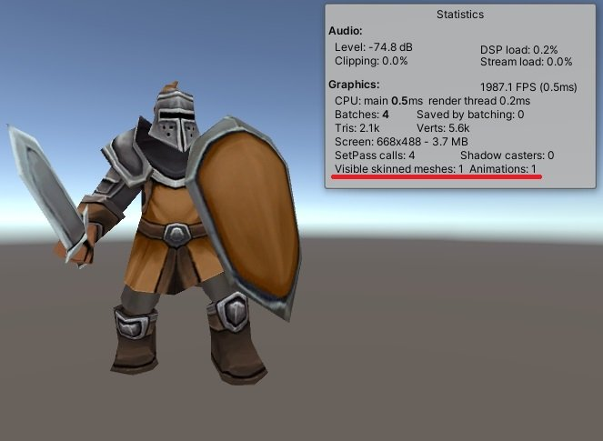
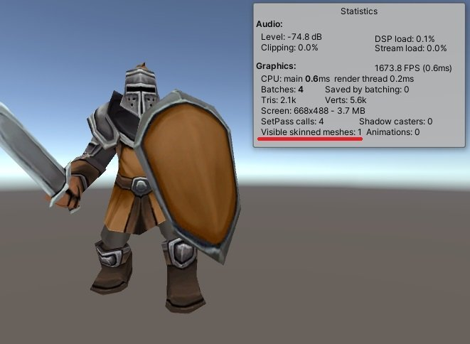
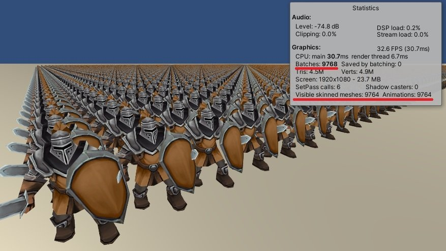
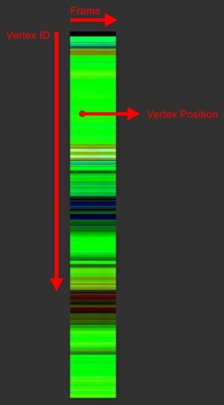
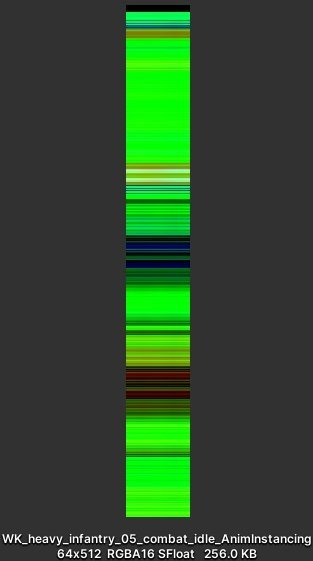
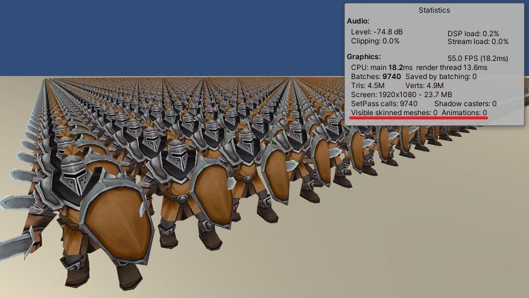
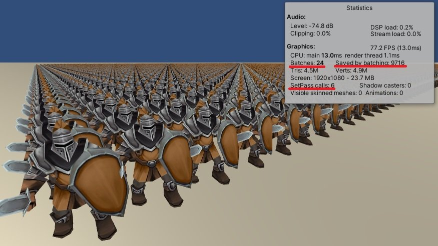

一般來說在 Unity 中播放動畫有 Animation 及 Animator 兩種方式，無論使用哪一種播放方式，都需要配合 SkinnedMeshRenderer 組件才能順利運作。
隨著動畫物件的數量上升，所佔用的效能也會成正比成長，影響的部分包含了：Batches、SetPass calls、Visible skinned meshes 及 Animations。
這次的文章中會探討基本的 Animation Instancing 的實作思路，如何在未使用 SkinnedMeshRenderer 及 Animation 的前提下讓物件動起來，並利用 GPU Instancing 來最佳化 Batches、SetPass calls。

Animation 方式
Animator 方式測試生成 10000 隻使用 Animation 的角色，觀察 Stats 可以發現 CPU main、Batches、Visible skinned meshes、Animation 都有明顯的提升。
原始數據
FPS: 32.6
CPU main: 30.7ms
CPU render thread: 6.7ms
Batches: 9768
Saved by batching: 0
SetPass calls: 6
Visible skinned meshes: 9762
Animation: 9764

未使用 Animation Instancing 優化前Animation Instancing 的概念相當容易理解，依據動畫的長度及幀率 (Frame Rate) 決定要取樣的幀數 (Frame)，將動畫內容以 X 為幀、Y 為頂點位置的方式儲存至動畫貼圖中，最後在由 Shader 讀取動畫貼圖，根據當前幀及頂點 ID 取出對應的頂點位置即可。

動畫貼圖1. 取得動畫長度
float animationLength = animationState.clip.length;2. 取得動畫幀率
float frameRate = animationState.clip.frameRate;3. 計算幀數
int frameCount = Mathf.NextPowerOfTwo((int)(animationLength * frameRate));4. 取得頂點數量
int vertexCount = Mathf.ClosestPowerOfTwo(m_skinnedMeshRenderer.sharedMesh.vertexCount);5. 生成動畫貼圖
Texture2D animationTexture = new Texture2D(frameCount, vertexCount, TextureFormat.RGBAHalf, false);6. 動畫取樣
animationState.time = sampleTime;
m_animation.Sample();7. Mesh 烘焙
m_skinnedMeshRenderer.BakeMesh(bakedMesh);8. 將頂點資料寫入動畫貼圖
for (int j = 0; j < bakedMesh.vertexCount; j++)
{
Vector3 vertex = bakedMesh.vertices[j];
animationTexture.SetPixel(i, j, new Color(vertex.x, vertex.y, vertex.z));
}9. 完成動畫貼圖烘焙

烘焙後的動畫貼圖 (X 軸為幀，Y軸為頂點資料)1. 取得頂點 ID
struct a2v
{
float2 uv : TEXCOORD0;
uint vertexId : SV_VertexID;
};2. 定義參數資料
sampler2D _AnimTex;
float4 _AnimTex_TexelSize;
float _AnimLength;3. 計算幀數
float time = _Time.y / _AnimLength;
float frame = time % 1.0;4. 計算頂點 ID 對應位置
float vertexCount = (v.vertexId + 0.5) * _AnimTex_TexelSize.y;5. 取樣頂點位置
float4 vertex = tex2Dlod(_AnimTex, float4(frame, vertexCount, 0, 0));6. 轉換頂點位置至螢幕空間
o.vertex = UnityObjectToClipPos(vertex);
Animation Instancing 實作成果加入 Animation Instancing 數據
FPS: 32.6 → 55.0
CPU main: 30.7ms → 18.2ms
CPU render thread: 6.7ms → 13.6ms
Batches: 9768 -> 9740
Saved by batching: 0
SetPass calls: 6 → 9740
Visible skinned meshes: 9762 → 0
Animation: 9764 → 0
雖然數據上已有不錯的進展，但 Batches、SetPass calls 都還有優化空間。
7. 加入 GPU Instancing
#pragma multi_compile_instancing
struct a2v
{
...
UNITY_VERTEX_INPUT_INSTANCE_ID
};
struct v2f
{
...
UNITY_VERTEX_INPUT_INSTANCE_ID
};
v2f vert (a2v v)
{
UNITY_SETUP_INSTANCE_ID(v);
...
}
加入 GPU Instancing加入 GPU Instancing 數據
FPS: 55.0 → 77.2
CPU main: 18.2ms → 13.0ms
CPU render thread: 13.6ms → 1.1ms
Batches: 9740 → 24
Saved by batching: 0 → 9716
SetPass calls: 9740 → 6
Visible skinned meshes: 0
Animation: 0
Animation Instancing 的動畫切換相當容易，只需要替換烘焙好的動畫貼圖即可
Animation Instancing 動畫切換演示
由上方動圖可以發現，人物的動畫一致性太高導致畫面變得單調許多，缺少了每個單位該有的個體性，可以簡單的加入一個參數用於隨機調整每個單位的動畫播放時間。
1. 定義隨機起始值
UNITY_INSTANCING_BUFFER_START(Props)
UNITY_DEFINE_INSTANCED_PROP(float, _Diverse)
UNITY_INSTANCING_BUFFER_END(Props)2. 取得隨機起始值
float diverse = UNITY_ACCESS_INSTANCED_PROP(Props, _Diverse);3. 使用隨機起始值更新時間
v2f vert (a2v v)
{
...
float time = (_Time.y + diverse) / _AnimLength;
...
}4. 設定隨機起始值
使用 MaterialPropertyBlock 配合 Renderer.SetPropertyBlock 設定隨機起始值
Animation Instancing 動畫切換演示 + 隨機起始幀數
成果演示
這篇文章中實作的 Animation Instancing 相當陽春，只包含 如何將動畫烘焙至動畫貼圖 及 如何從動畫貼圖讀取頂點位置 的核心功能，其他功能如 Animation Blending、Animation State、Animation Event、Wrap Mode…等都沒有實作，若對其他功能有興趣可以到 Unity 官方的開源專案 Unity-Technologies/Animation-Instancing 挖掘更多的技術。
Animation Instancing – 以萬人軍隊渲染為例（完整原始碼）
Toon RTS Units – Demo | 3D Characters | Unity Asset Store
Unity – Manual: GPU instancing
chenjd/Render-Crowd-Of-Animated-Characters